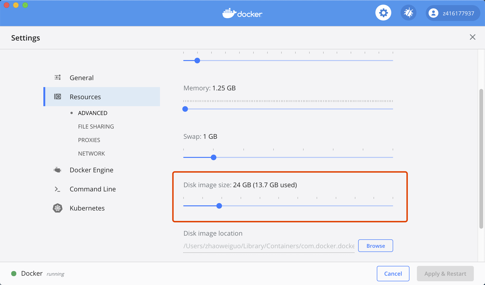

目录
3.10. 常见问题¶
站内链接:
阿里SLB限制导致service一直pending <index-open>
3.10.1. Job has reached the specified backoff limit¶
说明:
我使用Job启动一个服务, 这个服务是一个死循环, 启动起来一直运行
有一段时间后发现这个服务不可用了, 有对应的job但没有对应的pod
查看过程:
$ kubectl get Job
// 此job对应的COMPLETIONS为未执行完
NAME COMPLETIONS DURATION AGE
<jobName> 0/1 91d 91d
$ kubectl get po
// 对应的pod为空, 找不到对应的pod了
$ kubectl describe job <jobName>
...
// pod状态有一个显示Failed
Pods Statuses: 0 Running / 0 Succeeded / 1 Failed
...
$ kubectl get job <jobName> -o yaml:
// 再细查, 发现具体原因是BackoffLimitExceeded
...
status:
conditions:
- lastProbeTime: 2020-02-25T02:59:22Z
lastTransitionTime: 2020-02-25T02:59:22Z
message: Job has reached the specified backoff limit
reason: BackoffLimitExceeded
status: "True"
type: Failed
...
解决:
由于pod已经没有了, 所以查不出具体原因, 猜测是因为pod崩溃重启超过6次后不再重启了
配置选项: spec.backoffLimit不配置默认是6
即超过6次重启后就不再重启
说明: 出现这种问题一般都是程序有问题crash了
3.10.2. 修改/etc/hosts不生效问题¶
问题说明:
一个域名abc.zhaoweiguo.com在域名配置上指向ip1
因为一些原因, 想添加自定义hosts指向ip2
但我在Dockerfile中增加一条
RUN echo "ip2 abc.zhaoweiguo.com" >> /etc/hosts
但并不生效
问题定位:
使用kubectl命令exec进去发现/etc/hosts文件并没有被修改
原因:
docker镜像本质上是一个包含了整个操作系统的文件和目录的rootfs
用户制作镜像的每一步操作都会生成一个层，也就是一个增量的rootfs
docker容器的rootfs由只读层，init层和可读写层构成
/etc/hosts和/etc/resolv.conf等(只对当前容器生效的信息)会保留在init层
进行docker commit时不会提交这一层的信息
所以Dockerfile中修改/etc/hosts,或进入容器中修改后commit都无法真正修改/etc/hosts的内容
解决方法:
1. docker命令的方法:
增加 --add-host="hostname:host_ip"
如:
docker run -d --name test1 --add-host abc.zhaoweiguo.com:1.2.3.4 local/test
2. k8s修改/etc/hosts增加hostAliases
apiVersion: v1
kind: Pod // 注意这儿是Pod不是Deployment
metadata:
name: hostaliases-pod
spec:
hostAliases:
- ip: "127.0.0.1"
hostnames:
- "foo.local"
...
3. docker-compose.yml文件指定
test2:
build: local/test
extra_hosts:
abc.zhaoweiguo.com: 1.2.3.4
4. 构建镜像时增加(未验证)
docker build --add-host test.abc:1.2.3.4 -t local/test .
又发现新问题:
上面问题解决后, 使用kubectl命令exec进去发现/etc/hosts文件已经有了相应记录
ping, curl也是没有问题的, 但我对应的go项目还是不可用, 域名对应的还是ip1
原因:
原来golang默认使用/etc/nsswitch.conf
It is Go that is hardcoded to behave as glibc
(dns first and then use hosts if it fails) if there is no /etc/nsswitch.conf
而alpine默认用的是musl libc而非glibc, 所以它没有/etc/nsswitch.conf文件
musl libc does not use this file at all since it does not implement NSS
解决方法:
RUN [ ! -e /etc/nsswitch.conf ] && echo 'hosts: files dns' > /etc/nsswitch.conf
站内链接:
nsswitch.conf <index-sys>
3.10.3. job执行失败但没有一个执行失败的pod¶
kubectl describe job JobName:
...
Pods Statuses: 0 Running / 0 Succeeded / 1 Failed
...
kubectl get job JobName -o yaml:
status:
conditions:
- lastProbeTime: 2020-04-12T17:05:45Z
lastTransitionTime: 2020-04-12T17:05:45Z
message: Job has reached the specified backoff limit
reason: BackoffLimitExceeded
status: "True"
type: Failed
failed: 1
但在使用命令kubectl get po:
结果为空
原因:
配置选项设置为:restartPolicy: OnFailure时, 每次执行失败都会删除原来的pod并重启容器
最后删除原来的pod后检测超过了backoffLimit限制不再重启容器, 所以pod列表为空
注: restartPolicy: Never的话, 最后pod数为6(backoffLimit默认值为6)
实例:
# 可用如下实例验证
apiVersion: batch/v1
kind: Job
metadata:
name: job-error
spec:
backoffLimit: 5
template:
metadata:
name: job
spec:
restartPolicy: Never
containers:
- name: job
image: busybox
args:
- /bin/sh
- -c
- exit 1
3.10.4. k3s创建时报node.kubernetes.io/unreachable¶
创建成功了，node已经启动:
$ kubectl get pods --all-namespaces
NAMESPACE NAME READY STATUS
kube-system metrics-server-6d684c7b5-hgc6p 1/1 Running
kube-system helm-install-traefik-zp8r4 0/1 Completed
kube-system local-path-provisioner-58fb86bdfd-76whq 1/1 Running
kube-system coredns-d798c9dd-72r8v 1/1 Running
kube-system svclb-traefik-f8qk6 2/2 Running
kube-system traefik-6787cddb4b-fw2bg 0/1 Evicted
kube-system traefik-6787cddb4b-dvp2d 0/1 Pending
$ kubectl get pods traefik-6787cddb4b-dvp2d -n kube-system -o yaml
...
status:
conditions:
- lastProbeTime: null
lastTransitionTime: "2020-04-22T02:37:10Z"
message: '0/1 nodes are available: 1 node(s) had taints that the pod didn''t tolerate.'
reason: Unschedulable
status: "False"
type: PodScheduled
phase: Pending
qosClass: BestEffort
...
$ kubectl describe po traefik-6787cddb4b-dvp2d
...
Status: Failed
Reason: Evicted
Message: The node was low on resource: ephemeral-storage.
...
Events:
Type Reason Message
---- ------ -------
...
Warning Evicted The node was low on resource: ephemeral-storage.
...
说明:
其实看到这个信息基本就应该知道是因为磁盘不够, 但我执行df命令发现磁盘还好多
这时查看issue list发现下面一条, 也是指向磁盘不够问题
最后原因就是磁盘不够, 我使用的mac下Docker Desktop服务限制了docker使用磁盘大小
